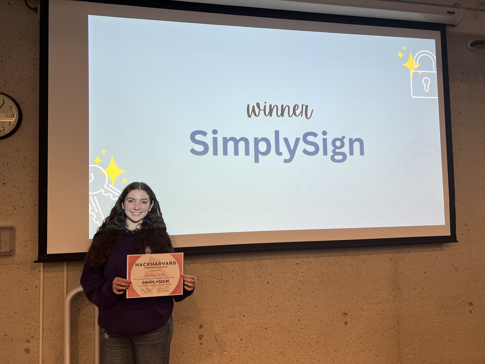
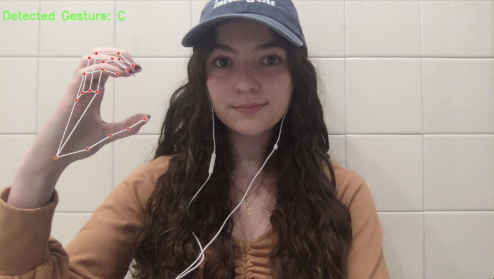

Technical Projects

One project that I'm extremely proud of came from my participation in HackHarvard 2024 as a Junior in college. While at HackHarvard, I worked as a solo team and ultimately won first place in the ‘Patient Safety Challenge’ track with a sign language translator that analyzes user hand gestures and displays them as text on-screen. I did this by creating and training a machine learning model to recognize American Sign Language (ASL) letters using the Sign Language MNIST dataset in Python and PyTorch. You can check out my project, SimplySign, here: https://lnkd.in/gZ3VrgDV.
